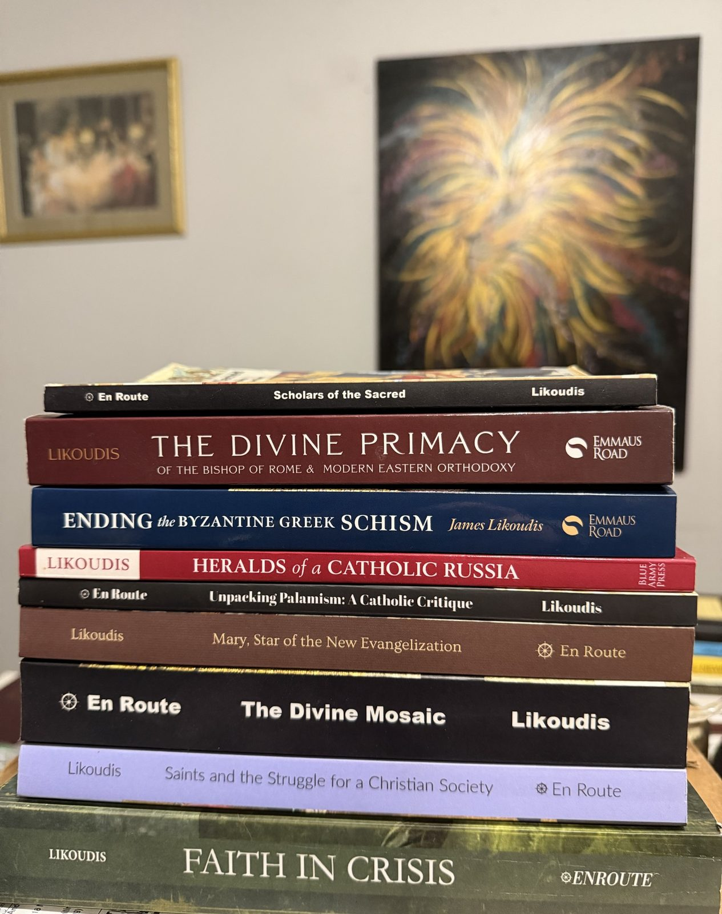
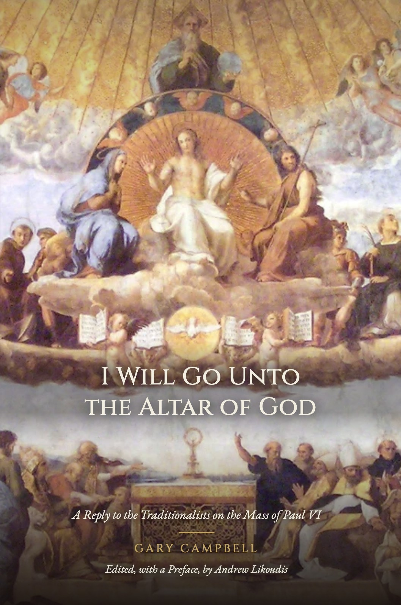
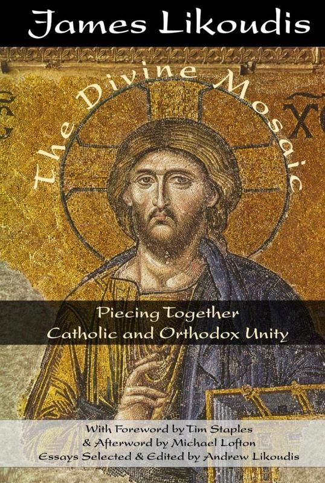
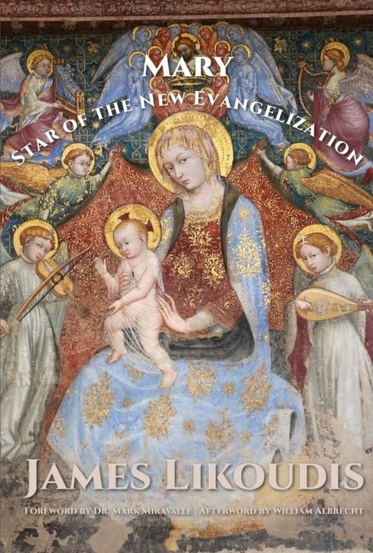
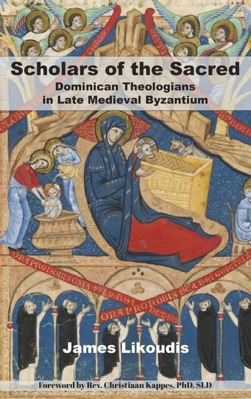

Publications
Books
Twelve volumes on ecclesiology, the papacy, and Christian unity — authored, edited, and compiled.

Featured
Faith in Crisis
A 40-chapter response to Catholic traditionalism on the questions of Church authority and reform — featuring Robert Cardinal Sarah, with an imprimatur from Archbishop Lori.
Read the full page →Editorial Work
Authored, Edited & Compiled


To His Face
Indefectibility & the Problem of Dissent
Foreword by Robert Fastiggi · Afterword by Emmett O'Regan
Author
En Route Books, forthcoming 2026
View details →

Challenge to the Church
The Case of Archbishop Lefebvre
Foreword by Larry Chapp · Trans. Paul Inwood
Edited & Introduced by Andrew Likoudis
En Route Books, 2026
View details →

I Will Go Unto the Altar of God
A Reply to the Traditionalists on the Mass of Paul VI
Edited, with a Preface, by Andrew Likoudis
En Route Books, 2026
View details →
Faith in Crisis
Critical Dialogues in Catholic Traditionalism, Church Authority, and Reform
Foreword by Rocco Buttiglione
Organized & Edited
En Route Books, 2025
View details →

Ending the Byzantine Greek Schism
Foreword by Scott Hahn, PhD
Edited (3rd ed.)
Emmaus Road / St. Paul Center, 2026
View details →

Eastern Orthodoxy and the See of Peter
A Journey Towards Full Communion
Foreword by Mike Aquilina
Edited
Emmaus Road, forthcoming
View details →

The Divine Primacy of the Bishop of Rome and Modern Eastern Orthodoxy
Letters to a Greek Orthodox on the Unity of the Church
Foreword by Robert Fastiggi, PhD
Edited
Emmaus Road, 2023
View details →

The Divine Mosaic
Piecing Together Catholic and Orthodox Unity
Foreword by Tim Staples
Compiled & Edited
En Route Books, 2023
View details →

Unpacking Palamism
A Catholic Critique
Foreword by Fr. Thomas Weinandy, OFM Cap
Compiled & Edited
En Route Books, 2024
View details →

Mary, Star of the New Evangelization
Foreword by Mark Miravalle, SThD
Compiled & Edited
En Route Books, 2024
View details →

Scholars of the Sacred
Dominican Theologians in Late Medieval Byzantium
Foreword by Fr. Christiaan Kappes
Compiled & Edited
En Route Books, 2023
View details →

Heralds of a Catholic Russia
Twelve Spiritual Pilgrims from Byzantium to Rome
Foreword by Robert Fastiggi, PhD
Edited
Blue Army Press, 2023
View details →

Saints and the Struggle for a Christian Society
Foreword by Fr. Robert J. Levis
Edited
En Route Books, 2024
View details →